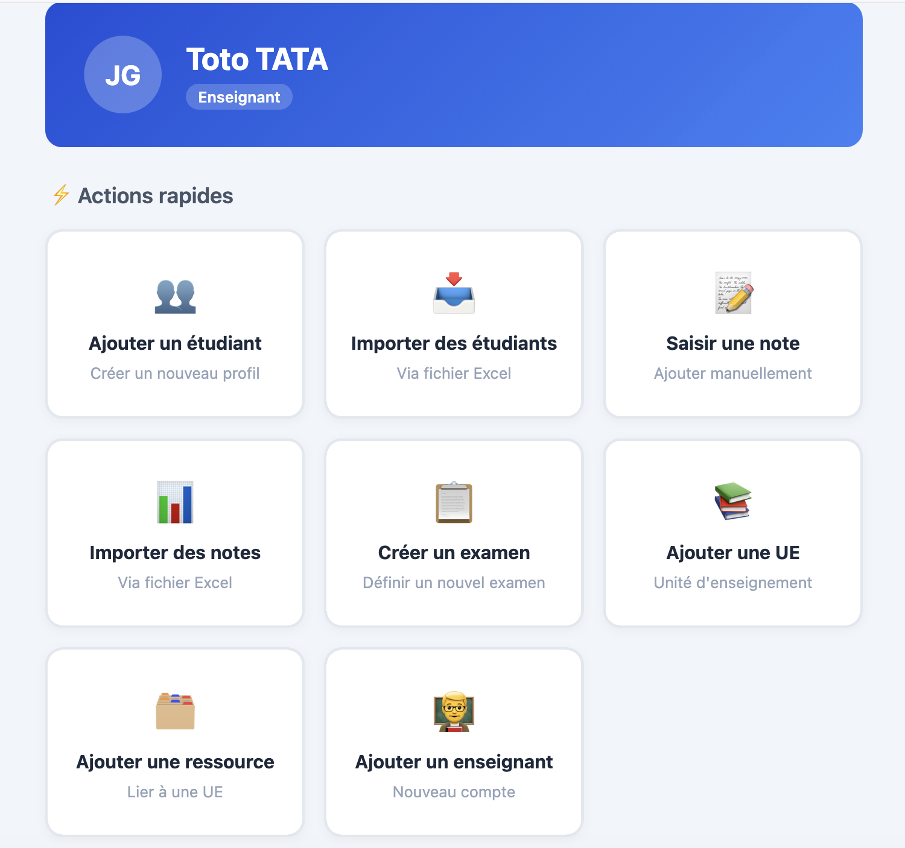
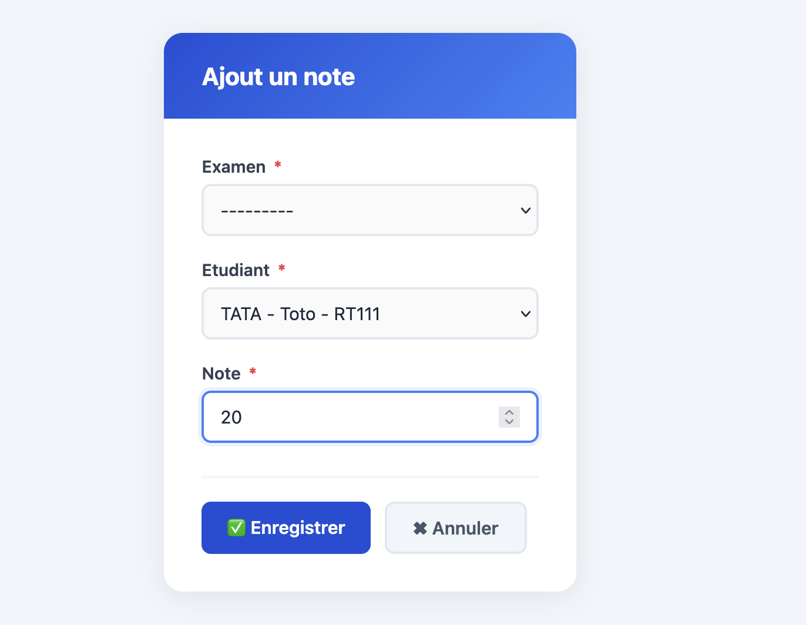
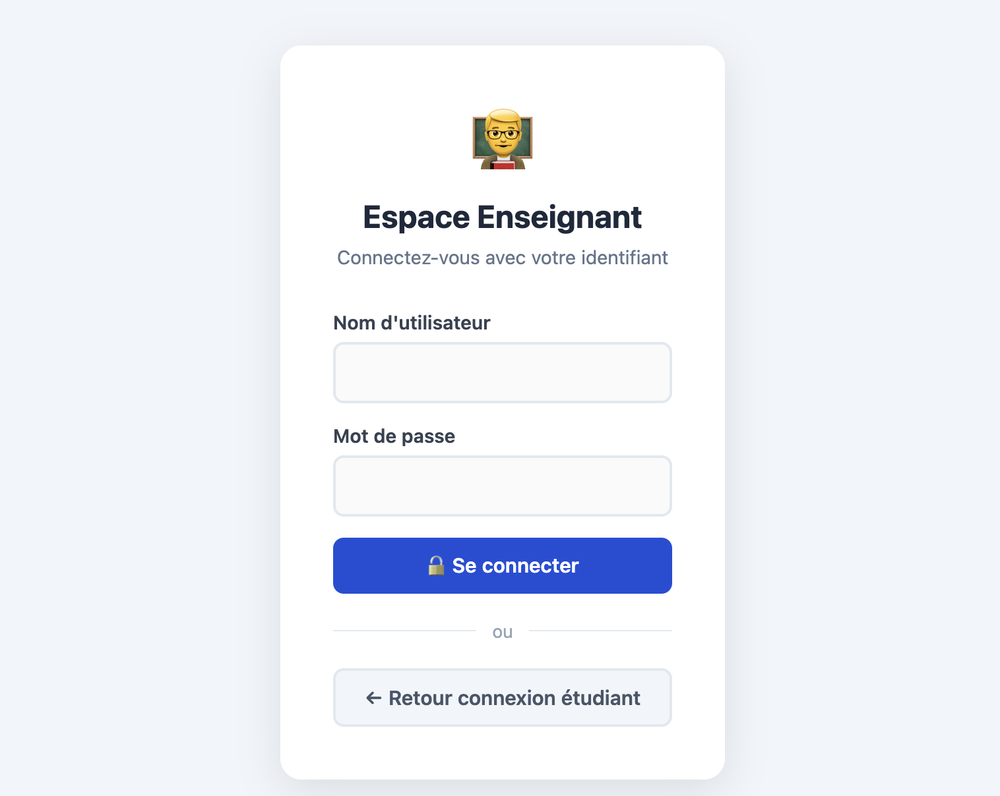
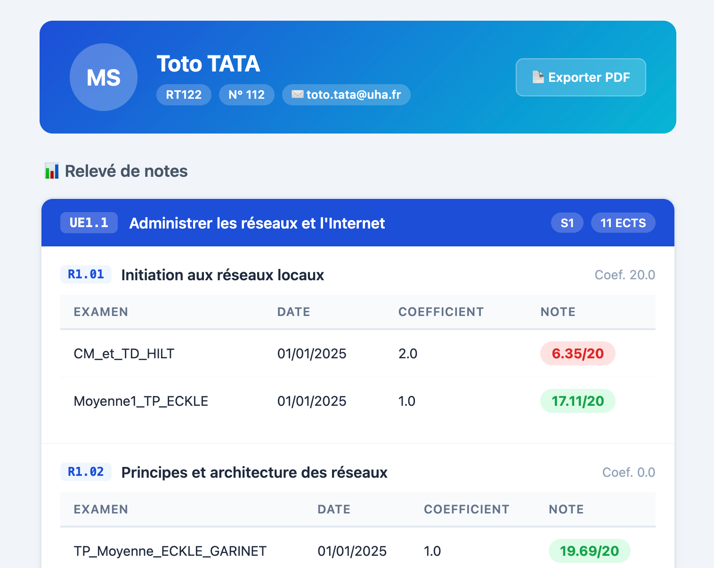
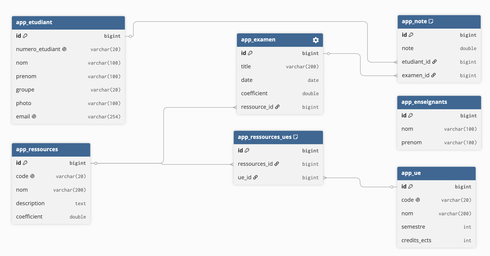
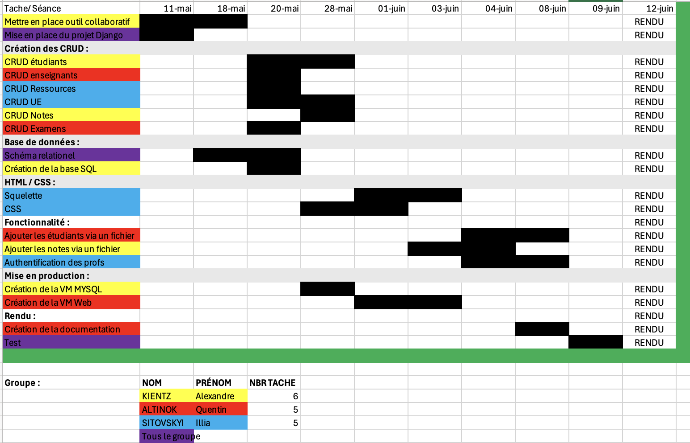

Project tracking sheet
| Project name | SAE 2.03 — Grade Manager |
| Project objectives | The objective of this SAE was to design and deploy a web application for adding, viewing and handling a set of data. Our group worked on the “Grade Manager” topic, whose goal was to create an interface for managing students, teaching units, resources, teachers, exams and grades. The site had to provide full CRUD features, allow grades to be entered manually or imported from a file, and then generate a simple grade report for a student. |
| Working method | This project was carried out in a group of 3 students. Collaborative work was organised around a GitHub repository, a Gantt chart and task distribution between group members. |
| Main targeted competency |
C3 — Create IT tools and applications for Networks & Telecommunications This competency is used through the design of a web application, database management, setting up a Linux development environment and deploying a functional web service. |
| Semester | Semester 2 · BUT 1 Networks & Telecommunications |
| Duration and deadlines | 27 April 2026 - 12 June 2026 · 26 hours |
| Technologies used | Debian Linux · Virtual machine · Python · Django · HTML · CSS · MySQL/MariaDB database · Nginx · Gunicorn · GitHub · OpenPyXL · Pillow · ReportLab · PyMySQL · Gantt chart |
| Skills developed link with the framework |
|
| Action plan key steps |
|
Project summary for the portfolio
Context & objective
The objective of this SAE was to design and deploy a web application allowing data to be viewed, inserted and handled from a database. Our topic was the creation of a grade manager for students. The website had to manage students, teachers, teaching units, resources, exams and grades using CRUD features. The project was carried out in a group of 3 students: Quentin Altinok, Alexandre Kientz and Illia Sitovskyi.
Technologies used
Competencies used
- AC0312 — Read, execute, correct and modify a program: modification of Django code to create pages, forms and processing.
- AC0314 — Know the architecture and technologies of a website: use of Django, views, HTML/CSS templates and application routing.
- AC0315 — Choose suitable data management mechanisms: design of a database to store students, teaching units, resources, teachers, exams and grades.
- AC0316 — Integrate into an environment suited to development and collaborative work: group work of 3, task distribution with a Gantt chart and use of a shared GitHub repository.
Process & methodology
We began by analysing the topic and defining the data to manage in the application: students, teaching units, resources, teachers, exams and grades. Then, we organised the work with a Gantt chart in order to distribute tasks among the group members. We set up the Django project, designed the database schema, then developed the different CRUD features. Finally, we added the project’s important functions: teacher login, manual grade entry, Excel file import, grade consultation and PDF grade report generation.
Illustrations

This screenshot presents the teacher interface of the application. It groups quick actions for adding a student, importing students, entering a grade, importing grades, creating an exam, adding a teaching unit, a resource or a teacher.

This illustration shows the grade entry form. The teacher can select an exam, choose a student and enter a grade. This feature is part of the CRUD and allows manual management of results.

This screenshot shows the login page reserved for teachers. It secures access to administration features such as creating exams, adding grades or importing files.

This screenshot presents a student’s grade report. Results are displayed by teaching unit and resource, with exams, coefficients and grades obtained. A button also allows the report to be exported as a PDF.

This illustration shows the database schema. It includes the main tables: students, teachers, teaching units, resources, exams and grades. The relationships between the tables make it possible to link each grade to a student and an exam.

This screenshot presents the project’s Gantt chart. It shows task planning, their distribution among group members and the progress of the different stages: database, CRUD, HTML/CSS, features, documentation and testing.
Feedback
What I learned
This SAE allowed me to improve in web development and database management. I learned to use Django to create a structured application, handle data related to students, teaching units, exams and grades, and implement a complete CRUD. I also discovered the importance of authentication, template organisation and separation between models, views, forms and routes. Working in a group of 3 also helped me better understand the importance of task distribution, communication and the use of a shared GitHub repository.
What I would do differently
With hindsight, I would prepare the database structure more precisely before starting development in order to avoid certain changes during the project. I would also organise tasks earlier within the group, with more precise objectives for each session. Finally, I would set up more regular tests after each feature to quickly check forms, file imports and the display of grade reports.